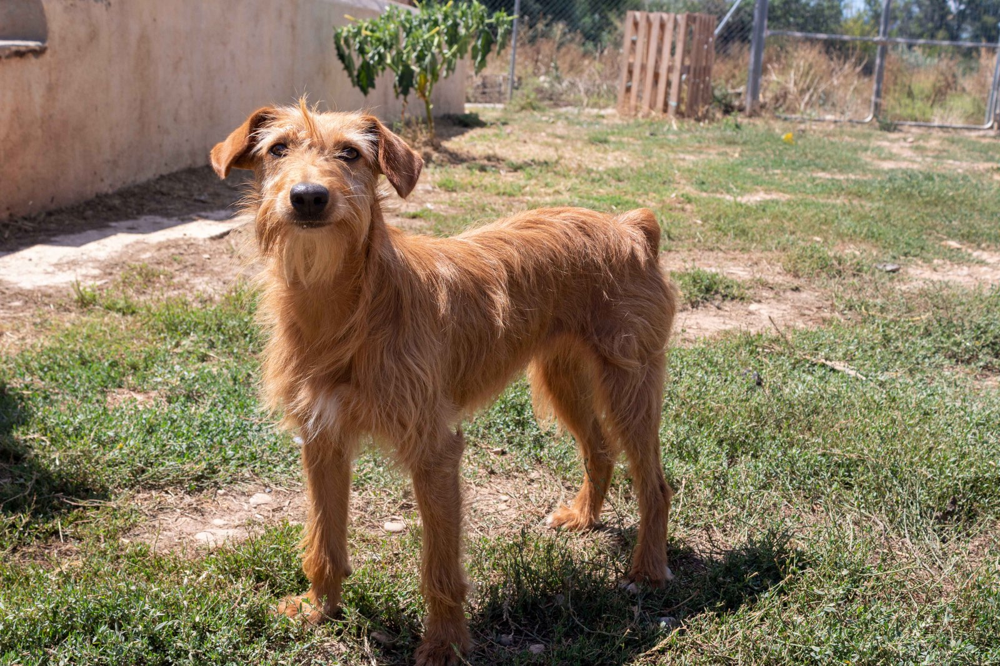
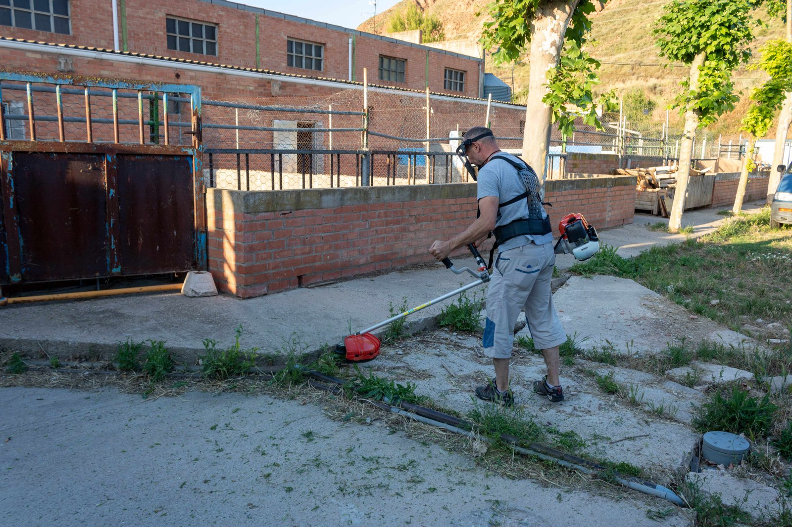
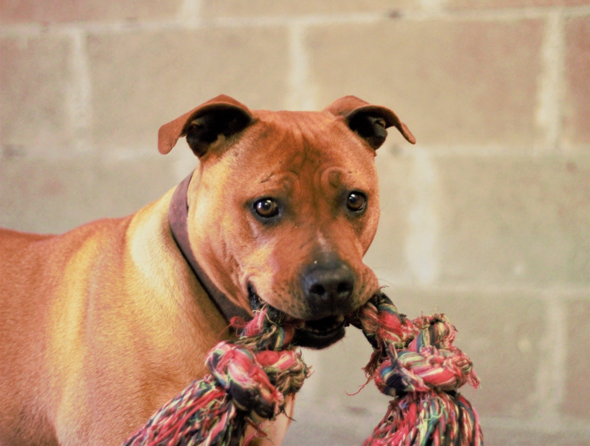
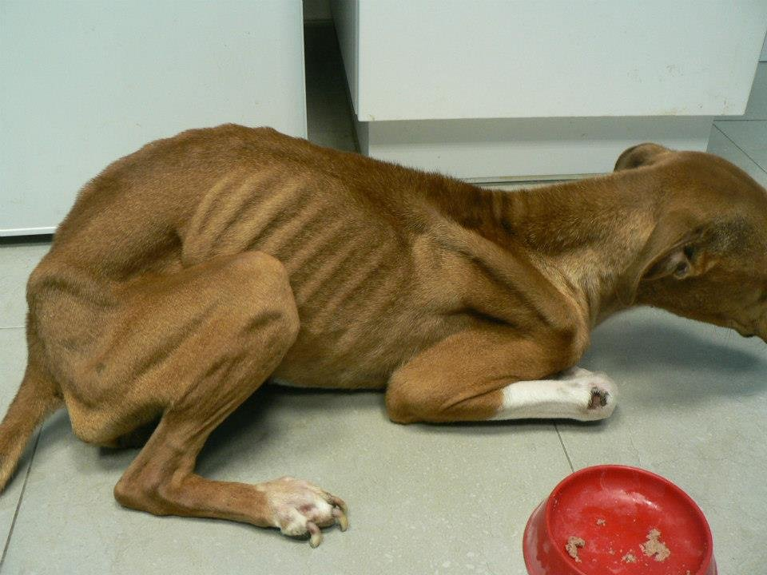
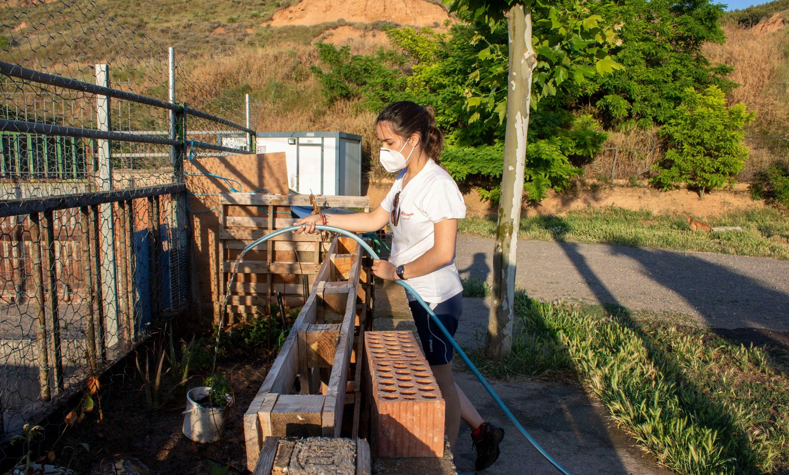
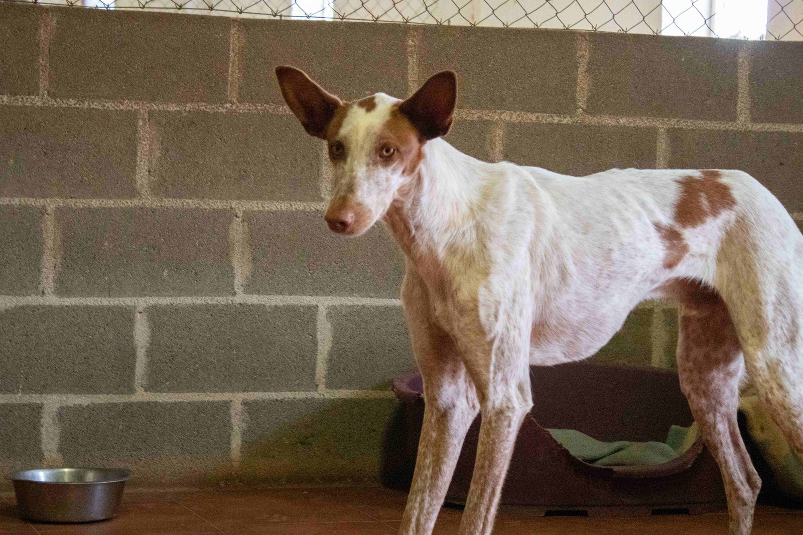

Adoptar
Dale un hogar definitivo a un perro o gato que lo necesita. Te guiamos en todo el proceso paso a paso.
Cómo adoptar
Somos Animales Rioja, una protectora dedicada a rescatar, cuidar y encontrar hogar a perros y gatos abandonados en La Rioja. Nuestro objetivo: el sacrificio cero.

Somos una asociación sin ánimo de lucro cuyo principal propósito es promover la adopción de animales abandonados en La Rioja. Nos dedicamos a buscar hogar para perros y gatos víctimas del abandono, entregándolos a familias responsables.
Trabajamos con animales ubicados en casas de acogida, residencias y la perrera municipal de Logroño. Cada animal merece una segunda oportunidad.
No hace falta adoptar para cambiar la vida de un animal. Hay muchas maneras de echar una mano y todas son igual de importantes.
Dale un hogar definitivo a un perro o gato que lo necesita. Te guiamos en todo el proceso paso a paso.
Cómo adoptarDesde 10 euros al mes contribuyes a su alimentación y atención veterinaria. Puedes visitarlo y sacarlo de paseo.
Ver apadrinamientoOfrece tu casa como hogar temporal mientras el animal encuentra su familia definitiva. Sin coste para ti.
Ver acogidaSiempre hacen falta manos para las tareas diarias: limpieza, paseos, socialización, eventos y mucho más.
Ser voluntarioTu aportación, por pequeña que sea, marca la diferencia. Transferencia, PayPal, Bizum o donación de material.
Hacer donaciónAnimales que por su edad lo tienen más difícil. Adopción con coste cero para darles la oportunidad que merecen.
Ver Club SeniorNuestro principal propósito es promover la adopción de animales abandonados y lograr el sacrificio cero en La Rioja.
Adoptar es sencillo, responsable y supervisado. Te acompañamos en cada etapa para que la experiencia sea la mejor posible para ti y para tu nuevo compañero.
Rellena y envía el formulario de adopción o hazlo directamente desde la ficha de tu peludo favorito.
Concertaremos una entrevista para conocernos, resolver dudas y valorar el entorno donde vivirá el animal.
Firma del contrato de adopción e ingreso de la cuota. Verificamos que todo esté listo para el animal.
Recoge a tu nuevo compañero en el punto acordado con un miembro de la asociación o en el refugio.

Tenemos decenas de perros y gatos esperando un hogar responsable. Desde cachorros hasta animales senior, cada uno con su personalidad y su historia. Todos han sido atendidos, vacunados y esterilizados.
Consulta nuestro listado actualizado de animales en adopción y encuentra al compañero perfecto para ti.



Rellena el formulario de adopción en nuestra web, concertaremos una entrevista para conoceros, confirmaremos la adopción con contrato y finalmente recogerás al animal en el punto acordado.
Sí. Las visitas personales son ideales. Solo necesitamos revisar los procesos previos y completar el cuestionario de adopción.
Una casa de acogida proporciona estancia temporal para animales que, por edad, condición física o falta de espacio, necesitan atención especial hasta encontrar hogar definitivo. El animal sigue siendo propiedad de la protectora y no supone gasto para el acogedor.
Sí. Muchos de nuestros animales han sido adoptados en otras comunidades e incluso en Francia, Alemania o Inglaterra. El proceso es similar, con costes adicionales de transporte.
Puedes apadrinar un animal desde 10 euros al mes, hacerte voluntario, acoger temporalmente o realizar una donación puntual o recurrente. Cada gesto ayuda.
Sí, es indispensable ser mayor de 18 años. No se entregan animales en adopción a menores de edad.
Estamos en Murillo de Río Leza, La Rioja. Llámanos, escríbenos por email o síguenos en redes sociales. Por protección de los animales, la ubicación exacta del refugio se facilita al concertar visita.